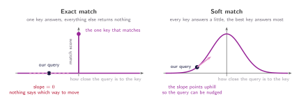
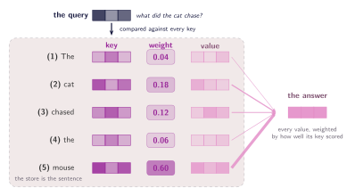

02 · Queries, Keys, and Values
The Dictionary Analogy
Queries, keys, and values: a soft dictionary lookup where every entry is allowed to answer a little.
Give it a key, get back a value
We have been saying that the model asks the sentence a question, without ever saying what asking means. The mechanism we need for it is not new, and it is not particular to machine learning. It is simply a key-value store (dictionary). You hand it a key, and it hands you back a value.
Every entry in the store is a pair. The key is what the entry can be found by; the value is what the entry actually gives you once it is found. A query comes in, we compare it against each key in turn, and the one that matches hands over its value. The comparison is exact, exactly one entry answers, and every other entry in the store contributes nothing.
store = {
"cat": "a small carnivorous mammal",
"mouse": "a small rodent",
"chased": "pursued at speed",
}
store["mouse"] # 'a small rodent'
store["what did the cat chase?"] # KeyError
Where it breaks
That is exactly what we want, and it is also where the analogy falls
apart. A real query is never literally one of the keys. When we ask
what did the cat chased?, we did not hand the store the
string "mouse". We handed it something
closer to the idea of the thing being chased, and nothing in the
store is filed under that.
The intriguing part is that an exact match gives us nothing to learn from. Either a key matches or it does not, so the score is one or it is zero, and a function that only ever returns one or zero has no slope. There is no direction in which to nudge the query to make the match better, because in some ways there is no better in this setup. There is only a binary comparison, "found" and "not found".

Let every key answer a little
So we give up the one thing that was causing all the trouble; that is, the demand that exactly one entry answers our query. Instead of asking whether a key matches, we now ask how well it matches, and what comes back is a number rather than a yes or a no.
Every key in the store gets a score. We turn those scores into weights that add up to one, and the store returns a blend of all the values. Each item in that blend is weighted by how well its own key scored. Nothing is ever not found any more, and at the same time everything is found a little (I did not intend to make this poetic).
This is more general than what we started with. If one key scores far above the rest, its weight goes to almost one and the others decrease proportionately to almost zero. The blend is then essentially that key's value. The exact lookup is simply what a soft lookup looks like when it's very confident.
Query, key, value
It is time to give the three things their names.
- Query → what we hand in, describing the thing we're looking for.
- Key → what each entry offers up to be matched against.
- Value → what that entry hands back once it is matched.
Query, key and value, and that is the entire vocabulary for everything that follows.
There's still something very simplistic about what we're trying to
illustrate here. Our store maps strings to strings, and we can't do
maths with a string. Scores and weights don't mean anything applied
to "mouse".
Everything in here is going to have to be a vector.
Easy then: we just need to swap strings for vectors, and look at what the store turns into. It isn't something we write by hand any more. It's the sentence itself. Every word becomes a key vector, which is how it gets found, and a value vector, which is what it hands over. Five words, five entries. The query is a vector too! And it comes from whichever part of the model needs to know something.

So a word isn't mapped to a written definition any more. It's mapped
to numbers, and to two sets of them: a key vector
and a value vector. And unlike a real dictionary,
nothing is looked up from a fixed table the way it was in the code
above. Each position in the sentence produces its own key and its
own value, which is why the two occurrences of
"the" are separate entries rather than
one entry consulted twice (pay attention that one
"the" has weight 0.04 and the other has
weight 0.06).
This soft lookup has a name, and it's the reason we started here at all.
Attention
A query, a set of keys, a set of values, and an answer built by blending every value in proportion to how well its key matched the query.
Great, but we still have problems to resolve. Two of them, in fact. How do we compare a query with a key to get a score out? And where do all these vectors come from in the first place? The first is the next section. The second has to wait a little longer, because it needs something we haven't touched yet.